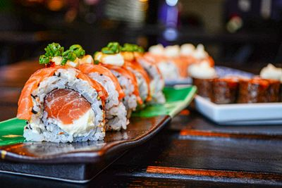
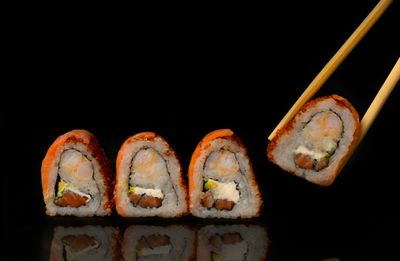

Sushi Deluxe
Frescura y tradición japonesa.
Descripción
El sushi es uno de los platos más representativos de Japón.
Se elabora con arroz sazonado y pescado fresco.
Existen múltiples variedades y combinaciones.
Galería

Sushi mixto

Sushi gambas

Sushi Premium
×
❮
❯
Nombre del plato